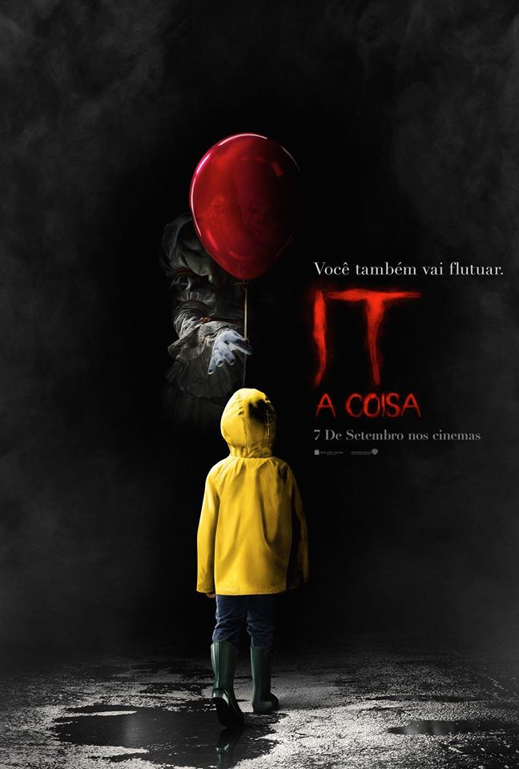

Projeto Intro a Dev Web
Meus Filmes Favoritos

The Batman
- Sinopse: "Quando um sádico serial killer começa a assassinar figuras políticas centrais de Gotham, o Batman é forçado a investigar a corrupção oculta da cidade e questionar o envolvimento de sua família."
- Duração: 176 minutos
- Ano de Lançamento: 2022
- Gênero: Ação/Policial/Drama/Mistério
- É um remake? Não
- Elenco: Robert Pattinson, Paul Dano, Zoë Kravitz

Interstellar
- Sinopse: "Uma equipe de exploradores viaja através de um buraco de minhoca no espaço, na tentativa de garantir a sobrevivência da humanidade."
- Duração: 169 minutos
- Ano de Lançamento: 2014
- Gênero: Aventura/Drama/Sci-Fi
- É um remake? Não
- Elenco: Matthew McConaughey, Jessica Chastain, Anne Hathaway

IT - A Coisa
- Sinopse: "Um grupo de garotos maltratados se une para destruir um monstro que se disfarça de palhaço e ataca as crianças de sua pequena cidade."
- Duração: 135 minutos
- Ano de Lançamento: 2017
- Gênero: Terror
- É um remake? Sim
- Elenco: Bill Skarsgard, Finn Wolfhard, Jaeden Martell